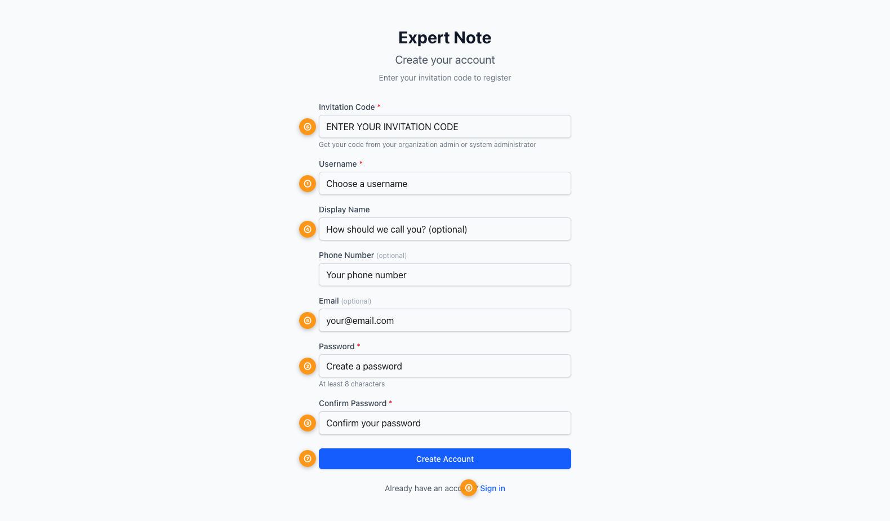

Quick Start Guide
Transform human expertise into structured, AI-ready knowledge assets
What is Expert Note?
Expert Note captures human expert knowledge and transforms it into structured, reusable AI assets. The system helps you:
- Upload documents containing expert knowledge (PDFs, Word files, text)
- Annotate content using a structured three-level system
- Extract organized knowledge entries using AI
- Generate prompts that embody expert reasoning patterns
The Knowledge Pipeline
Expert Note transforms unstructured expertise into AI-ready assets through four stages:
Each stage adds structure. Documents are raw text. Annotations add human judgment about importance. Knowledge entries organize those judgments. Prompts encode the reasoning patterns for AI to use.
Getting Started
Registration
New users need an invitation code from their organization admin. The code determines your role:
| Role | Access | Key Features |
|---|---|---|
| Organization Owner | Full access | Create documents, annotate, extract knowledge, manage members |
| Organization Member | Limited access | View shared documents, edit if allowed, manage personal tags |

The Annotation System
Expert Note uses a three-level annotation system to categorize content by importance. This hierarchy helps AI understand the structure of expert knowledge.
| Level | Shortcut | Use For |
|---|---|---|
| MACRO | Cmd + 1 | Main themes, key arguments, overarching concepts |
| MESO | Cmd + 2 | Supporting evidence, methodologies, secondary themes |
| MICRO | Cmd + 3 | Specific facts, quotes, data points, citations |
Examples

Extracting Knowledge
Once you've annotated a document, AI analyzes your annotations and creates a structured knowledge entry.
Select an Extraction Guide
Choose a template matching your domain (Academic Research, Business Strategy, Technical Documentation)
Add Custom Instructions (Optional)
Guide the AI to focus on specific aspects or adjust the output format
Extract
AI generates background context, organized concepts, relationships, and actionable insights

Generating AI Prompts
Turn extracted knowledge into prompts that teach AI to reason like your domain experts.
Unlike generic prompts, these are created from real expert knowledge. The AI learns the actual reasoning patterns, frameworks, and domain-specific insights from your annotated documents.
Example use cases:
- Research assistant that applies your senior scientist's methodology
- Business analyst using your team's strategic frameworks
- Technical writer matching your documentation standards

15-Minute First Session
Get started with Expert Note in a quick hands-on session:
Upload a Document (2 min)
Choose a document you know well—research paper, report, or documentation
Add 10-15 Annotations (8 min)
Mark main ideas (MACRO), supporting points (MESO), and specific details (MICRO)
Extract Knowledge (3 min)
Use the default extraction guide and review what AI generates
Review Results (2 min)
See how AI structured your annotations into organized knowledge
Best Practices
Recommended
- Start with MACRO—identify big ideas first
- Be selective—annotate what's important
- One concept per annotation
- Use consistent criteria across documents
- Choose extraction guides matching your domain
Avoid
- Annotating every sentence
- Mixing multiple ideas in one annotation
- Skipping annotation levels
- Extracting without annotations
- Quantity over quality
5-10 well-chosen annotations per page produce better knowledge entries than marking everything. Focus on what experts consider important.
Quick Reference
Keyboard Shortcuts
| MACRO annotation | Cmd + 1 |
| MESO annotation | Cmd + 2 |
| MICRO annotation | Cmd + 3 |
Key Terms
| Document | Source text from experts (PDF, Word, typed content) |
| Annotation | Marked section categorized by importance level |
| Knowledge Entry | AI-extracted structured insights from annotations |
| Prompt | AI instruction encoding expert reasoning patterns |
| Extraction Guide | Template controlling how AI structures knowledge |